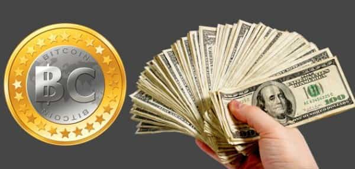
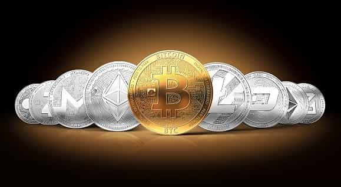

Sponsored Article is ROK's official account that publishes sponsored articles from advertisers. If you are interested hiring a sponsored article for your site, product, or service, visit our advertising page.


The following article is sponsored by Localvcoins.
Since Japan made Bitcoin a legal currency, it has surged to over $15,000 USD. Mark my words, the days of the Rothschild banking cartel is soon over. This is a new beginning.
As other countries start to see the benefits of freedom from the Banking Cartel, cryptocurrencies will be the future and the smart ones would have been the ones who got involved early. Now, there are dozens of cryptocurrencies worth market caps of eight figures, and the rate of new entrants is accelerating.
Think, if you would had invested $5 dollars in bitcoin 7 years ago, you would be $4.4 million dollars richer by now! Imagine that.

As humans, we are so scared to try something new, so scared to step out of the norm that most of us just end up in the same old place day after day, doing the same old things. I mean look at the facts: $5 nowadays barely buys you a McDonald’s value meal, but there is at least one happy sod out there who thought, “Let me pass on this poisoned food that craters my testosterone.” He invested that $5 in Bitcoin instead.
When you could lose $5 while walking down the street, why not? He stepped out of his comfort zone and tried something new! Now he’s probably on a yacht somewhere getting his balls licked by two girls in their 20s.
Some companies, like my own at Local V-Coins, even give you a free five dollars when you register so you don’t even have to invest your own money. I know that the crypto system is so much better than the big banks that I am willing to give you a free run with real money.
There is more you should know: I didn’t invest in Bitcoin solely because of the money. I did it because of what the whole blockchain movement actually stands for: the end of the Zionist controlled central banking system. Blockchain is the biggest financial revolution since the creation of actual money. Thanks to Satoshi Nakamoto, creator of Bitcoin, we have finally been given a chance to take back power from the banking elite.

For those of you who don’t know how our banking system works, I will give you a quick explanation. The cash money you have in your hand is just a piece of paper that says I owe you this much or that much. It’s not like the past when your money was actually backed by the gold it was made out of. Yet we go to work for that piece of paper, and when we go to work and receive our paychecks, we deposit the money in a bank.
This bank then uses your hard earned cash to invest as it sees fit, sometimes making up to 800% profit, but how much of that profit does your bank give to you? 0.33% in most cases. We even allow them to charge us for withdrawing our own money from ATMs. We pay to use our own money when in reality they should pay us.
The banking system is the biggest scam since the invention of make-up. On the other hand, Local V-Coins is 80% backed by secure material assets. In addition…
And check out OneGram, which is fully based on gold and planning to receive a $500 million ICO investment. There is also Bullion Coin, where you can choose between gold and silver backing, without the volatility of other currencies. Click here to visit Local V-Coins